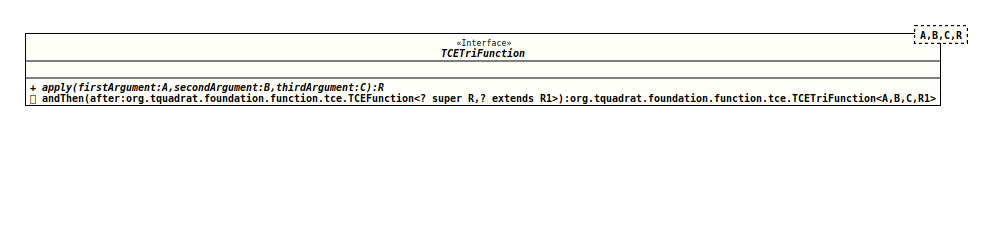

Module org.tquadrat.foundation.base
Interface TCETriFunction<A,B,C,R>
- Type Parameters:
A- The type of the first argument to the function.B- The type of the second argument to the function.C- The type of the third argument to the function.R- The type of the result of the function.
- Functional Interface:
- This is a functional interface and can therefore be used as the assignment target for a lambda expression or method reference.
@FunctionalInterface
@ClassVersion(sourceVersion="$Id: TCETriFunction.java 1060 2023-09-24 19:21:40Z tquadrat $")
@API(status=STABLE,
since="0.0.5")
public interface TCETriFunction<A,B,C,R>
The TCE version of the interface
Different from the method
This is a functional interface whose functional method is
TriFunction
that represents a function that accepts three arguments and produces a
result.Different from the method
Function.apply()
the method
apply(Object, Object, Object)
of this interface declares to throw a
checked exception.This is a functional interface whose functional method is
apply(Object, Object, Object).- Author:
- Thomas Thrien (thomas.thrien@tquadrat.org)
- Version:
- $Id: TCETriFunction.java 1060 2023-09-24 19:21:40Z tquadrat $
- Since:
- 0.0.5
- UML Diagram
-

UML Diagram for "org.tquadrat.foundation.function.tce.TCETriFunction"
{kind=link}
-
Method Summary
Modifier and TypeMethodDescriptiondefault <R1> TCETriFunction<A, B, C, R1> andThen(TCEFunction<? super R, ? extends R1> after) Returns a composed function that first applies this function to its input, and then applies the after function to the result.Applies this function to the given arguments.
-
Method Details
-
apply
Applies this function to the given arguments.- Parameters:
firstArgument- The first function argument.secondArgument- The second function argument.thirdArgument- The third function argument.- Returns:
- The function result.
- Throws:
Exception- Something went wrong.
-
andThen
@API(status=STABLE, since="0.1.0") default <R1> TCETriFunction<A,B, andThenC, R1> (TCEFunction<? super R, ? extends R1> after) Returns a composed function that first applies this function to its input, and then applies the after function to the result. If evaluation of either function throws an exception, it is relayed to the caller of the composed function.- Type Parameters:
R1- The type of the output of theafterfunction, and of the composed function.- Parameters:
after- The function to apply after this function is applied.- Returns:
- A composed function that first applies this function and then
applies the
afterfunction. - Since:
- 0.1.0
-